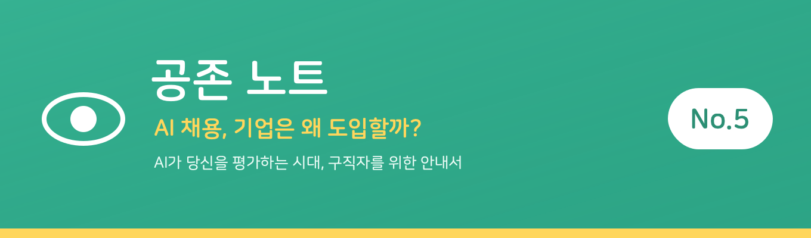
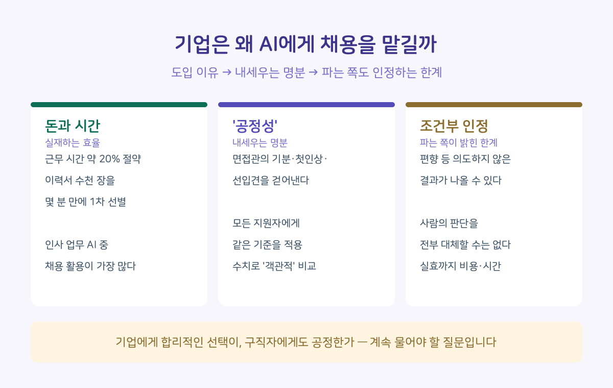

지난 호까지 우리는 구직자 입장에서 AI 채용을 봤습니다. 오늘은 반대편으로 가봅니다.

기업은 왜 굳이 AI에게 사람을 뽑게 할까요. 그 계산을 알면, 구직자에게도 보이는 것들이 있습니다.
이유는 사실 단순합니다 — 돈과 시간
기업이 AI 채용을 도입하는 이유는 생각보다 단순합니다. 비용과 시간입니다.
한 조사에 따르면 채용에 AI를 활용하면 근무 시간의 약 20%가 절약된다고 합니다. 수천 장의 이력서를 사람이 일일이 읽는 대신, AI가 몇 분 만에 1차로 걸러냅니다. 국내에서도 인사 업무에 AI를 도입한 기업이 상당수에 이르고, 그중 채용에 쓰는 경우가 가장 많다는 조사가 있습니다. (링크드인·고용노동부 등 조사 기준)
인사담당자 한 명 앞에 이력서 수천 장이 쌓이고 마감은 일주일 뒤인 상황을 떠올리면, 기업이 왜 AI를 부르는지 이해가 됩니다.
기업이 진짜 기대하는 것 — '공정성'이라는 명분
그런데 효율만이 이유는 아닙니다. 기업이 내세우는 또 하나의 명분이 있습니다. 바로 '공정성'입니다.
사람이 사람을 평가하면 아무리 애써도 편차가 생깁니다. 면접관의 기분, 첫인상, 학벌에 대한 선입견이 개입합니다. 기업은 AI가 이 주관을 걷어내고, 모든 지원자에게 같은 기준을 적용해줄 것이라 기대합니다. 표정·음성·데이터를 수치로 환산해 '객관적'으로 비교한다는 것이죠.
구직자에겐 얄밉게 들릴 수 있지만, 적어도 명분상으로는 그럴듯합니다.
그런데 — 파는 쪽도 인정하는 사실
여기서 반전이 있습니다. 이 기대가 완전하지 않다는 걸, 다름 아닌 AI 채용을 옹호하는 자료들조차 인정하고 있다는 점입니다.
AI 채용 도입 성과를 분석한 한 연구는, 기업이 도입 전 반드시 고려할 점으로 이런 것들을 꼽았습니다. AI가 '편향 등 의도하지 않은 결과'를 낼 수 있다는 것, AI가 사람이 하던 판단을 모두 대체할 수는 없다는 것, 그리고 실효성을 보려면 상당한 비용과 시간이 든다는 것.
즉 '객관적이고 공정하다'는 명분은, 그 명분을 파는 쪽에서도 조건부로만 인정하는 셈입니다.

맺음말
기업이 AI를 쓰는 데는 그럴 만한 이유가 있습니다. 효율은 실재하고, 공정성에 대한 기대도 이해할 만합니다. 그 사정을 아는 것은 구직자에게도 도움이 됩니다.
다만 공존 노트는, 기업의 효율과 구직자의 공정이 언제나 같은 방향을 향하지는 않는다고 봅니다. 기업에게 합리적인 선택이, 구직자에게도 공정한 것인지는 계속 물어야 할 질문입니다.
확인된 사실들
• 한 조사에 따르면 채용에 AI를 쓰면 근무 시간의 약 20%가 절약된다
• 국내 인사 업무 AI 도입 기업 중 채용에 쓰는 경우가 가장 많다는 조사가 있다
• AI 채용을 옹호하는 연구조차 편향 가능성·판단 대체 한계·상당한 비용을 인정한다
• 인용 수치는 링크드인·고용노동부 등 발표 기준, 조사·시기에 따라 다를 수 있다
이렇게 대비하세요
• AI 채용은 사라지지 않는다 — 비용·시간이라는 이유가 너무 강력하다. '거부'보다 '이해하고 대비'가 현실적
• 그러나 '공정하다'는 말을 그대로 믿을 필요는 없다 — 기업도, 만든 쪽도 한계를 안다
• 이 평가가 완벽하지 않다는 걸 알고, 지나치게 위축되지 않는 것이 구직자가 할 수 있는 일
다음 호에서는 'AI 채용은 정말 공정할까 — 편향과 차별'을 다룹니다. 오늘 기업이 기대한 그 '공정성'의 이면을 들여다봅니다.
※ 인용 수치·내용은 링크드인, 고용노동부, 학술 사례연구 등의 발표 자료 기준이며, 세부 수치는 조사·시기에 따라 다를 수 있습니다.
공존 노트 · AI가 당신을 평가하는 시대, 구직자를 위한 안내서